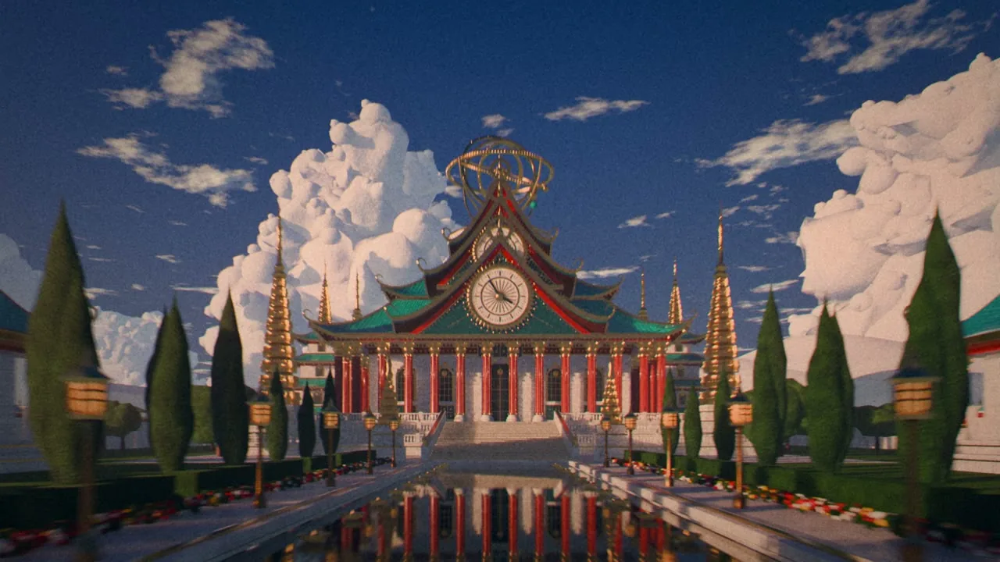
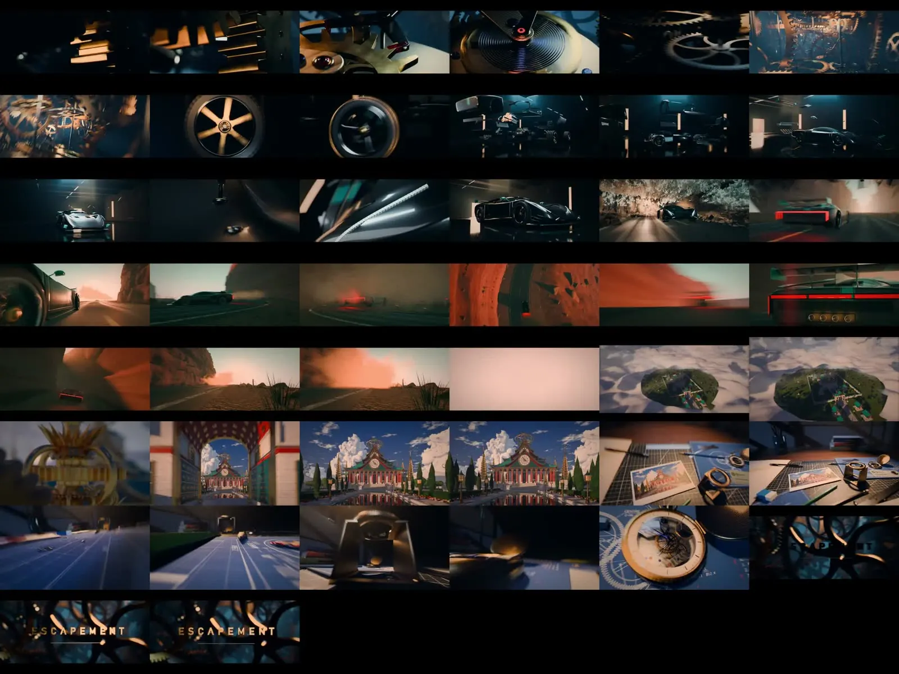
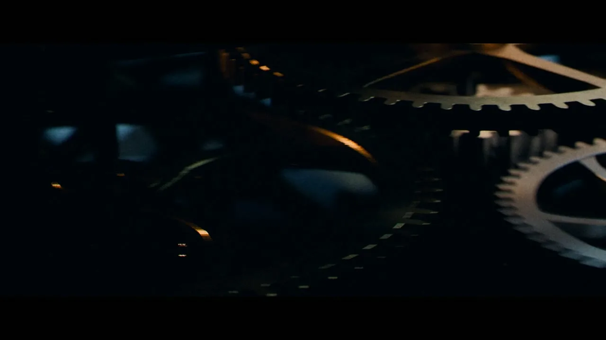
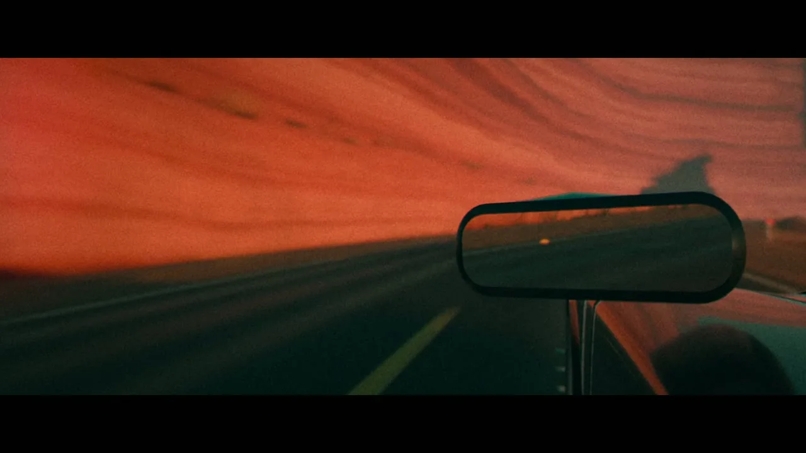
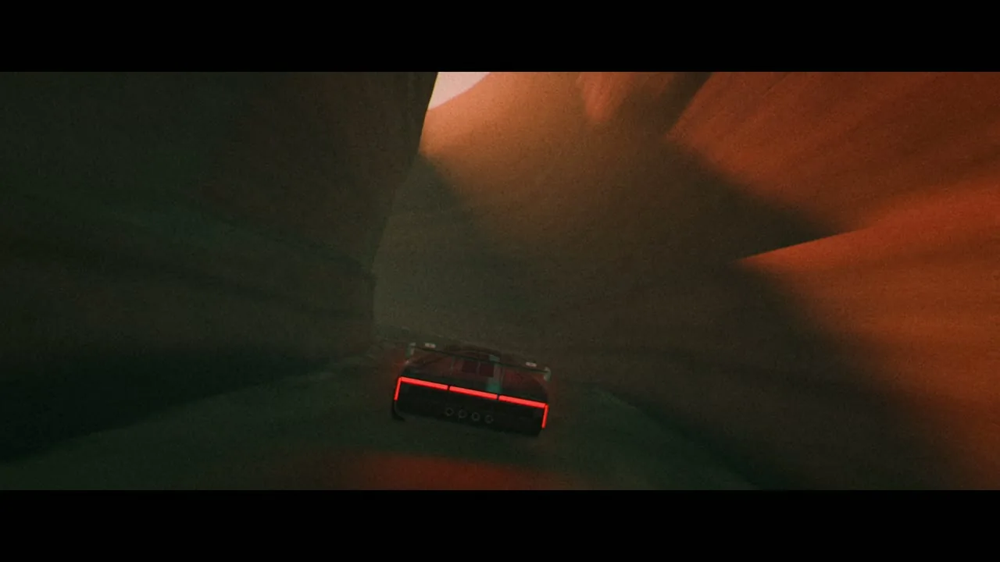
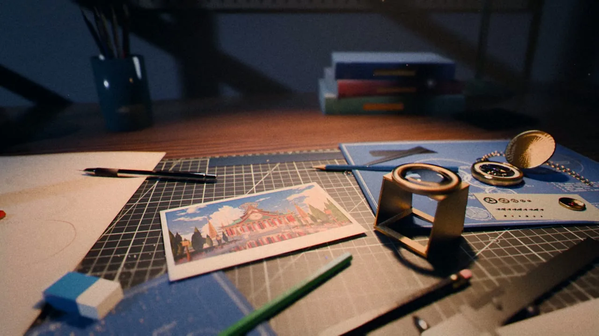
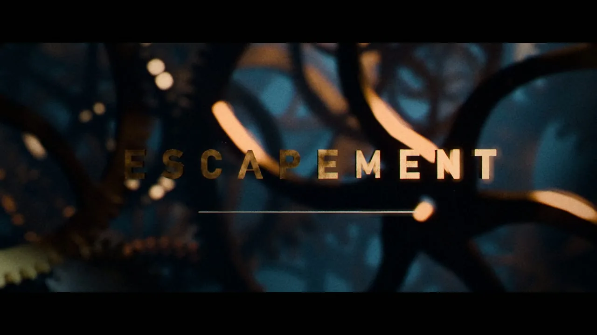

Escapement 是一支约 36 秒的短片。作者 Leon Lin 说，整部片子里的物体、材质、灯光和镜头运动都由 Python 脚本在无头运行的 Blender 5.2 里搭出来，真正出图的是 EEVEE；剪辑、调色和混音也是代码。片名取自钟表里那套让时间一格一格走下去的擒纵机构。仓库源码为 MIT，成片在 GitHub Releases，本页不转载视频。

docs/still_07.jpg，依 MIT 许可转载并压缩为 WebP。一、它是什么
仓库自述：这是一部由 Claude Code（Opus 5.5）写 Python、驱动无头 Blender 5.2，在一台集成显卡笔记本（AMD Radeon 780M）上做出来的电影感短片。作者在 README 里把故事串成一条不断「逃逸」的梦：黑暗里亮起的微距齿轮，六辐齿轮对切成跑车轮毂，超跑在黑色影棚里按节拍自行装配，影棚碎成黄昏峡谷，汽车一路疾驰（跟拍、后视镜、漂移、俯拍、从镜头上方轧过、一线天峡谷追逐），扬尘化成云海，露出一座钟表神庙，最后一帧对切成书桌上的照片，镜头低伏掠过桌面，再潜入怀表，落到标题。
生产圣经 BRIEF.md 把标题写得很清楚：擒纵机构是「让时间一拍一拍往前走的心脏」。它也写明：片中没有真人；构图为 2.39:1 的中间带宽（剪辑时加黑边），但完整的 16:9 也要站得住。
公开的镜头表 shotlist.json 按 24 帧/秒列出 30 个镜头。后来作者把云层揭示（4A）和两段神庙特写（4D、4E）从成片里剪掉了——更好的云在这块集成显卡上会把 GPU 卡死。X 上那支视频时长约 36.5 秒，与 README 所说的「36 秒」相符。镜头表把后来被剪掉的镜头也算进去，总长约 45 秒；声音时间线里的终点约 41 秒。本站没有重新剪片子去对账，只能同时记下这几组数字。

docs/contact_sheet.jpg 接触印样，依 MIT 许可转载并压缩为 WebP。
docs/still_01.jpg）
docs/still_04.jpg）
docs/still_05.jpg）
docs/still_08.jpg）
docs/still_10.jpg）以上静帧均来自作者仓库 docs/，依 MIT 许可转载、缩小并转为 WebP。成片视频未下载、未转载；可在 GitHub Releases 或 原帖 观看。
二、它是怎么做出来的
作者在介绍帖里先写「每一帧都是 Python，没有用任何三维资产」，第二天自己更正了措辞：Python 负责搭出每一场戏，没有人打开过 Blender 的图形界面；真正渲染的是 EEVEE。仍然没有使用现成的模型或纹理。这个更正很重要，本页以更正后的说法为准。
README 把方法收成五条，仓库里的圣经、镜头表和分幕迭代日志可以对上：
- 场景是代码生成的。齿轮、跑车、峡谷、神庙和书桌道具都由
lib/与shots/里的脚本生成。作者的准确说法是：没有下载三维模型或图像纹理。生产圣经里提到，环境光可以使用 Blender 自带的日落、室内等 EXR；这不等于从网上下载贴图，但「完全不用任何图像」并不精确。 - 一场戏一个搭建 agent。五个搭建 agent 并行做五幕，再由一个导演 agent 审每一幕，第二轮按意见修改。迭代过程记在
notes/act*.md。本站读过这五份日志：里面有具体的曝光返工、漂移和「从镜头上方轧过」等后加镜头、以及一次两台 EEVEE 同时渲染把 780M 卡死的记录，与 README 的说法相符。 - 一次只跑一个渲染。所有 Blender 进程都经过
tools/rb.py的全局 GPU 锁（tools/gpu_guard.py）。作者写：曾经让几路 EEVEE 共享集成显卡，笔记本蓝屏，错误码0x119 VIDEO_SCHEDULER_INTERNAL_ERROR，所以这把锁从不绕过。 - 用测量，而不是只靠眼看。
tools/exposure_check.py给每张静帧打分，检查高光裁切、黑位被抬和颜色发闷；合成器会在高光到达纯白之前把它滚下来。圣经里后补的客户规则，几乎都在对付「太亮、太白、颜色发灰」。 - 剪辑、调色、混音也是代码。
tools/edit.py（numpy + ffmpeg）负责套片和转场（硬切、匹配剪切、扬尘到云的亮度叠化），以及调色、光晕、颗粒和宽银幕黑边。tools/mix.py按edit/cues.json把音乐和音效混到 120 BPM 的格子上（每拍 12 帧）。
作者还说自己用了 GitHub 上的 /cook skill（2026-11-10 核对其根目录 LICENSE 为 MIT，版权人同样是 Leon Lin）。那是一套「给定参考、标准与时间，让智能体自己循环搭建、出静帧、换上下文审看再修改」的技能。Escapement 仓库的组织方式与之相近，但 cook 自己的 README 演示名单里还没有写入本片，本站不能把「用了 /cook」当成已核过的运行记录，只能记作作者自述。
汽车那场戏，作者引用了 Rory Flynn（@Ror_Fly）的帖子作参考。对方写的是用 Three.js 做场面调度参考、再用 Midjourney 和 Seedance 出片。那是第三方内容，本页只作短引，不转载其视频或截图。圣经要求：可以借参考的光线、调色和细节密度，但不要去复制具体的泰国神庙、某款车或某个房间。
三、作者怎么说，以及本站核对到什么
- 仓库创建于 2026-11-08T22:29:13Z（新加坡时间 2026-11-09 06:29:13），介绍主帖在约四分钟后发出。2026-11-10 读取 GitHub 仓库公开页时为 94 星、11 个 fork，有 1 个 Release（提供 1080p 成片和一版更小的手机拷贝）。这些数字会变。
- 主帖发出时（本站 2026-11-10 上午读取）约 11.5 万次浏览、2,340 次喜欢、1,718 次收藏。互动数字同样会变。
- 作者说：Opus 5.5 的「xhigh ultracode」，一条提示词，再加一点轻微把控；被问到把控几次时，回答「大约 5 次」。仓库里的圣经却留下多条制作中途补上的客户规则（效果要看起来真实、千万不要过亮、还要再加疯狂的驾驶镜头），分幕日志里也能看到多轮返工。本站把「一条提示词」理解为作者对自己起点的概括，并不等于中途没有改过要求。⚠️「xhigh ultracode」具体对应哪一档官方设置，未独立核实。
- 被问到渲染多久时，作者说：在 2GB 的集成显卡上，「我想大概 3 小时」。这是他的估计。日志里能看到单帧大约十几到三十秒的记录，但本站没有重跑渲染去核对总时长。⚠️
- README 的再现步骤要求 Windows、Blender 5.2，以及 PATH 上的 ffmpeg，并用 Blender 自带的 Python（已含 numpy）。本站在 Linux 环境，没有安装或运行这条管线。⚠️
- 音效许可要分开看。原帖写「Mixkit + Freesound CC0」；README 写明音乐是 Grigoriy Nuzhny 的 Epical Drums 02（Mixkit 库存音乐免费许可），音效来自 Mixkit 与 Freesound CC0，且 Mixkit 不允许把这些声音当作独立文件再分发，所以音频不在仓库里。仓库中的
audio/manifest.json统计为：Mixkit 音效 103、CC0 48、numpy 合成 13、派生 3、Mixkit 音乐 3。圣经里有一条客户规则是「只用下载来的免费素材，绝不自己合成音效或音乐」，与清单里的 13 条 numpy 合成存在出入。⚠️ 本站未去 Mixkit 或 Freesound 逐条打开源页面复核。
四、许可
2026-11-10 读取根目录 LICENSE，正文以 MIT License
起首，版权人为 Leon Lin（Copyright (c) 2026 Leon Lin）。README 随后写明：代码为 MIT；音乐和音效保留各自许可。GitHub 仓库页的许可证标签显示为 MIT。这不是法律意见。
因此：源码、README 和 docs/ 里的静帧，本页按 MIT 做导读、全文中译并转载压缩图；成片视频不转载；第三方音乐与音效不随仓库分发，本页也不收录音频文件。
同作者在本站还有 Athenaion、Shanshui 与 Casa Ocaso。那些作品主要在浏览器里用 three.js 生成世界；这一次他改用无头 Blender 做离线短片，但「参考图定标准、多 agent 分头搭建、用测量而不是只靠眼看、一块集成显卡一次只跑一个渲染」这条工作方式是连着的。
五、介绍帖全文中译
以下为作者本人帖子的中文全译。原帖为英文。主帖时间 2026-11-08T22:33:38Z（新加坡时间 2026-11-09 06:33:38）。更正帖时间 2026-11-09T06:31:39Z（新加坡时间 2026-11-09 14:31:39）。
主帖
这大概是我用 Opus 5.5 做过的最好的东西。
每一帧都是 Python，没有用任何三维资产。
原帖。配有一支约 36.5 秒的视频，本页不转载。
我是这样做的
我是这样做的：
- opus 5.5 xhigh ultracode，一条提示词，再加一点轻微的把控
- 无头运行的 Blender 5.2，EEVEE
- 剪辑、调色和混音也是代码（numpy + ffmpeg）
- 汽车那场戏我用了这个做参考：Ror_Fly 的帖子
- 再叠上有创意的转场，以及三维神庙和齿轮的生成图像
用了在我 GitHub 上的 /cook skill
原帖。文中「三维神庙和齿轮的生成图像」，结合圣经里的参考图名单，更像是风格参考，而不是把外部三维模型贴进场景；具体文件没有出现在本次读到的仓库根目录里。⚠️
音乐与音效
音乐：「Epical Drums 02」，Grigoriy Nuzhny（Mixkit）
音效：Mixkit + Freesound CC0
云层的遗憾
还不算完美。云层揭示看起来还是有点像沙丘，哈哈。
它其实做出过更好的云，但我这块（集成）显卡直接卡住了，所以只好砍掉。
仓库
评论区里作者自己的回答
有人问需要把控几次，作者答：「大约 5 次。」（原帖）
有人问渲染花了多久，作者答：「在我这块集成显卡（2GB）上，我想大概 3 小时。」（原帖）
有人指出，如果是用 Blender 做的，说「每一帧都是 Python」容易让人误解。作者先回复对方：「说得对，我应该把话说得更清楚。我的意思是：每个物体、材质、灯光和镜头运动都是驱动 Blender 的 Python 脚本，没有人碰过界面，当然最终是由 Blender 的 EEVEE 渲染的。」随后又在主帖下发了独立更正：
更正「每一帧都是 Python」：
Python 搭建了每一场戏（物体、材质、灯光、镜头运动），所以没有人碰过 Blender 的界面。真正出图的是 Blender 的 EEVEE。
仍然没有使用任何现成的模型或纹理 :)
附录一：README 全文中译
译自 2026-11-10 读取的 Leonxlnx/escapement/README.md（main 分支）。命令、文件名与错误码保持原文。接触印样与静帧见上文，此处不重复贴图。这是译文，不是官方中文文档。
ESCAPEMENT
一部 36 秒的电影感短片，由 Claude Code（Opus 5.5） 用 Python 驱动无头运行的 Blender 5.2 做成，机器是一台带集成显卡（AMD Radeon 780M）的笔记本。一条提示词，然后几轮反馈。
观看：ESCAPEMENT.mp4（1080p 母版） · Release 里还有一份更小的、给手机用的拷贝。
（原文此处为 docs/contact_sheet.jpg 接触印样，见上文转载。）
这部片子
黑暗中打亮的微距钟表齿轮 → 一只六辐齿轮对切成汽车轮毂 → 超跑在黑暗影棚里自行装配，零件按节拍砸到位 → 影棚碎开，变成黄昏峡谷 → 驾驶（跟拍、后视镜、漂移、俯拍无人机、汽车从镜头上方轧过、一线天峡谷追逐）→ 扬尘化成云 → 一座钟表神庙 → 最后一帧对切成书桌上同一画面的照片 → 低机位掠过桌面 → 潜入一只怀表 → 标题。
（原文此处为六张静帧表：docs/still_01.jpg、still_04.jpg、still_05.jpg、still_07.jpg、still_08.jpg、still_10.jpg，见上文转载。）
它是怎么做出来的
- 每一个三维物体、材质、灯光和镜头运动都是 Python。没有下载任何三维模型或图像纹理。齿轮、汽车、峡谷、神庙和书桌道具，全部由
lib/与shots/里的脚本生成。 - 一场戏一个 agent。五个搭建 agent 并行做五幕，然后一个导演 agent 审每一幕，第二轮落实修改（
notes/act*.md是它们的迭代日志）。它们依据的简报是BRIEF.md；镜头表是shotlist.json。 - 一次只跑一个渲染。每一次 Blender 运行都经过
tools/rb.py，它持有一把全局 GPU 锁（tools/gpu_guard.py）。曾经让几路 EEVEE 渲染共享这块集成显卡，笔记本蓝屏了一次（0x119 VIDEO_SCHEDULER_INTERNAL_ERROR），所以这把锁从不绕过。 - 用测量，而不是只靠眼看。
tools/exposure_check.py为每张静帧评分，检查高光裁切、黑位被抬和颜色发闷；common.compositor()会在高光到达白色之前把它滚下来。 - 剪辑、调色和混音也是代码。
tools/edit.py（numpy + ffmpeg）负责套片、转场（切换、匹配剪切、扬尘到云的亮度叠化）、调色、光晕、颗粒和宽银幕黑边。tools/mix.py按edit/cues.json混合音乐和音效，卡在音乐 120 BPM 的格子上（每拍 12 帧）。
仓库结构
BRIEF.md 智能体所依据的生产圣经
shotlist.json 每个镜头：编号、脚本、剪辑长度、手柄帧
lib/ 共用工具箱（common.py）+ 分幕生成器（车、峡谷、神庙、书桌、云……）
shots/ 一幕一个脚本；`--shot <ID>` 搭建场景并渲染该镜头
tools/ 渲染运行器与 GPU 锁、渲染队列、剪辑/调色、混音、线索表与 EDL 生成器、质检
edit/ 最终剪辑决策表、修剪和声音线索表
audio/ 每条声音的清单（源地址、许可、作者）+ 音乐节拍分析
notes/ 智能体分幕迭代日志
docs/ 静帧
如何复现
环境要求：Windows、Blender 5.2、PATH 上的 ffmpeg。全部使用 Blender 自带的 Python 运行（其中已有 numpy）。
- 把
BLENDER设为你的blender.exe。 - 按
audio/manifest.json列出的地址，把声音下载到audio/sfx/和audio/music/，并使用清单中的文件名（Mixkit 与 Freesound CC0，链接已写在清单里）。音频文件本身不在本仓库中，因为 Mixkit 许可不允许把它们当作独立文件再分发。 - 渲染一张测试静帧：
python tools/rb.py shots/act1_gears.py -- --shot 1A --stills 30 --pct 50 - 渲染镜头：
python tools/render_queue.py（同一时间只运行一个 Blender 进程；在集成显卡上可能需要许多个小时）。 - 做剪辑和混音：
python tools/make_edl.py，python tools/make_cues.py，然后python tools/assemble.py。
需要老实说清的限制：
shots/act4_temple.py里有一版后来重做的云，在这台笔记本上渲染太重（会把 GPU 卡住）。发布的成片在神庙揭示处用的是较早那一版云层；云层浮现镜头（4A）和两段神庙特写（4D、4E）已从成片中剪掉。- 快速运动的镜头按 83% 分辨率、16 个采样渲染，以赶上层时间，然后再放大。
- 路径和时间是为某一台特定笔记本调的。换到你的机器上，采样数和体积效果参数大概需要再调。
致谢
- 音乐：「Epical Drums 02」，Grigoriy Nuzhny，Mixkit（Mixkit 库存音乐免费许可）。
- 音效：Mixkit（Mixkit 音效免费许可）与 Freesound（CC0）。每个文件、来源和许可都列在
audio/manifest.json。 - 使用 Claude Code（Claude Opus 5.5）和 Blender 制作。
许可
代码：MIT，见 LICENSE。音乐和音效保留上文列出的各自许可。
README 英文原文
# ESCAPEMENT
A 36-second cinematic short film made by **Claude Code (Opus 5.5)** driving **Blender 5.2** headless from Python, on a laptop with an integrated GPU (AMD Radeon 780M). One prompt, then a few rounds of feedback.
**Watch it:** [ESCAPEMENT.mp4 (1080p master)](https://github.com/Leonxlnx/escapement/releases/latest) · the release also has a smaller copy for phones.

## The film
Macro clockwork lit out of the dark → a 6-spoke gear match-cuts into a car's wheel → the hypercar assembles itself in a dark studio, parts slamming on the beat → the studio breaks apart into a dusk canyon → the drive (tracking shot, mirror, drift, top-down drone, the car driving over the camera, a slot-canyon chase) → the dust turns into clouds → a clockwork temple → the last frame match-cuts to the same image as a printed photo on a desk → a low run across the desk → a dive into a pocket watch → title.
| | | |
|---|---|---|
|  |  |  |
|  |  |  |
## How it was made
- **Every 3D object, material, light and camera move is Python.** No 3D models or image textures were downloaded. Gears, the car, the canyon, the temple and the desk props are all generated by the scripts in `lib/` and `shots/`.
- **One agent per act.** Five builder agents worked on the five acts in parallel, then a director agent critiqued each act and a second pass applied the fixes (`notes/act*.md` are their iteration logs). The brief they worked from is [`BRIEF.md`](BRIEF.md); the shot table is [`shotlist.json`](shotlist.json).
- **One render at a time.** Every Blender run goes through `tools/rb.py`, which holds a global GPU lock (`tools/gpu_guard.py`). Letting several EEVEE renders share the iGPU bluescreened the laptop once (`0x119 VIDEO_SCHEDULER_INTERNAL_ERROR`), so the lock is never bypassed.
- **Measured, not eyeballed.** `tools/exposure_check.py` scores every still for clipped highlights, lifted blacks and dull colour, and `common.compositor()` rolls highlights off before they reach white.
- **Edit, grade and mix are code too.** `tools/edit.py` (numpy + ffmpeg) conforms the shots, does the transitions (cuts, match cuts, a dust-to-cloud luma dissolve), the grade, halation, grain and letterbox. `tools/mix.py` mixes music and sound effects from `edit/cues.json`, cut to the music's 120 BPM grid (12 frames per beat).
## Repo layout
```
BRIEF.md production bible the agents worked from
shotlist.json every shot: id, script, cut length, handles
lib/ shared toolkit (common.py) + per-act generators (car, canyon, temple, desk, clouds...)
shots/ one script per act; `--shot <ID>` builds the scene and renders that shot
tools/ render runner + GPU lock, render queue, edit/grade, mixer, cue + EDL generators, QC
edit/ the final edit decision list, trims and sound cue sheet
audio/ manifest of every sound (source URL, license, author) + music beat analysis
notes/ the agents' iteration logs per act
docs/ stills
```
## Reproducing it
Requirements: Windows, Blender 5.2, ffmpeg on PATH. Everything runs with Blender's bundled Python (it has numpy).
1. Set `BLENDER` to your `blender.exe`.
2. Download the sounds listed in `audio/manifest.json` (Mixkit and Freesound CC0, links included) into `audio/sfx/` and `audio/music/` with the file names given there. The audio files themselves aren't in this repo because the Mixkit license doesn't allow redistributing them as standalone files.
3. Render a test still: `python tools/rb.py shots/act1_gears.py -- --shot 1A --stills 30 --pct 50`
4. Render the shots: `python tools/render_queue.py` (one Blender process at a time; it can take many hours on an iGPU).
5. Build the edit and mix: `python tools/make_edl.py`, `python tools/make_cues.py`, then `python tools/assemble.py`.
Honest caveats:
- `shots/act4_temple.py` contains a later cloud rework that turned out too heavy to render on this laptop (it froze the GPU). The released film uses the earlier cloud deck for the temple reveal, and the cloud-emergence shot (4A) and two temple close-ups (4D, 4E) were cut from the edit.
- Fast-motion shots were rendered at 83% resolution and 16 samples to fit the render time, then upscaled.
- Paths and timings were tuned for one specific laptop. Expect to adjust samples and volumetric settings for yours.
## Credits
- Music: "Epical Drums 02" by Grigoriy Nuzhny, [Mixkit](https://mixkit.co/free-stock-music/) (Mixkit Stock Music Free License).
- Sound effects: [Mixkit](https://mixkit.co/free-sound-effects/) (Mixkit Sound Effects Free License) and [Freesound](https://freesound.org) (CC0). Every file, its source and license is listed in `audio/manifest.json`.
- Made with Claude Code (Claude Opus 5.5) and Blender.
## License
Code: MIT, see [LICENSE](LICENSE). The music and sound effects keep their own licenses listed above.
MIT 许可声明原文（LICENSE）
MIT License
Copyright (c) 2026 Leon Lin
Permission is hereby granted, free of charge, to any person obtaining a copy
of this software and associated documentation files (the "Software"), to deal
in the Software without restriction, including without limitation the rights
to use, copy, modify, merge, publish, distribute, sublicense, and/or sell
copies of the Software, and to permit persons to whom the Software is
furnished to do so, subject to the following conditions:
The above copyright notice and this permission notice shall be included in all
copies or substantial portions of the Software.
THE SOFTWARE IS PROVIDED "AS IS", WITHOUT WARRANTY OF ANY KIND, EXPRESS OR
IMPLIED, INCLUDING BUT NOT LIMITED TO THE WARRANTIES OF MERCHANTABILITY,
FITNESS FOR A PARTICULAR PURPOSE AND NONINFRINGEMENT. IN NO EVENT SHALL THE
AUTHORS OR COPYRIGHT HOLDERS BE LIABLE FOR ANY CLAIM, DAMAGES OR OTHER
LIABILITY, WHETHER IN AN ACTION OF CONTRACT, TORT OR OTHERWISE, ARISING FROM,
OUT OF OR IN CONNECTION WITH THE SOFTWARE OR THE USE OR OTHER DEALINGS IN THE
SOFTWARE.